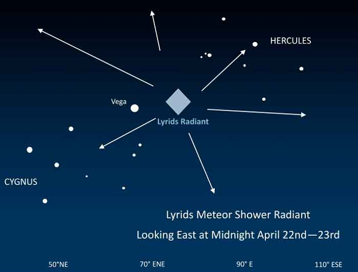

Ожидается до 20 метеоров в час. Поток образован частицами пыли, оставленными кометой C / 1861 G1 (Тэтчер), открытой в 1861 году. Радиант — созвездие Лиры, которое обычно видно под утро. Луна будет находиться в “убывающей” фазе, так что не создаст проблем для наблюдения за яркими метеорами.